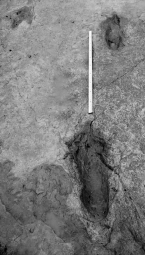
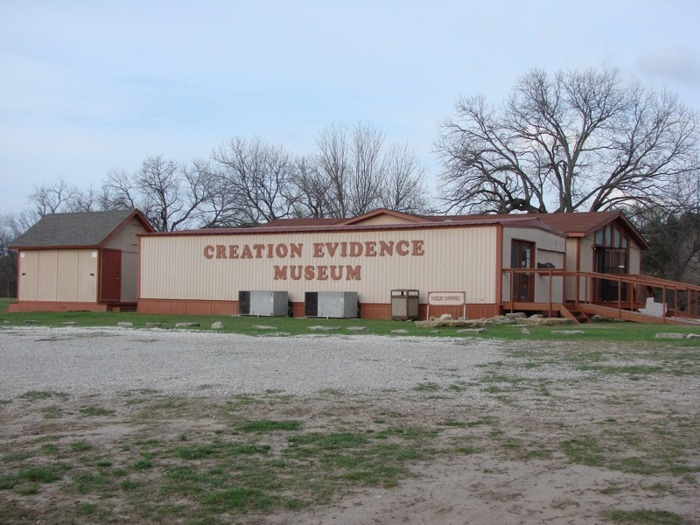

Góra Chief Mountain, to przykład formacji, która ma warstwy skalne „nie po kolei” w sensie geologicznym – rzekomo starsze skały leżą na rzekomo młodszych. [zdj. tłum.]
commons.wikimedia.org/wiki/File:Chief_Mountain.jpg
Boskie zachowanie Nowego Testamentu
Tłumaczenie czwartej edycji książki GOD HAS PRESERVED HIS TEXT! The Divine Preservation of the New Testament
ISBN: 978-0-9974686-9-4
Wilbur N. Pickering
Tłumaczenie wykonał Tomasz Skraskowski dla Wydawnictwa Świadome Chrześcijaństwo. Zdjęcia dodane przez tłumacza zazaczone są adnotacją [zdj. tłum.], przypisy dodane przez tłumacza zaznaczone są adnotacją [przyp. tłum.].
Tłumaczenie dostępne do pobrania z tometchy.github.io/Bog-zachowal-swoj-Tekst-Wilbur-Pickering w formatach:
© 2021 Wilbur N. Pickering
Oryginał dostępny na http://thechristiancommons.com.
Udostępniono na licencji:
Uznanie autorstwa - Na tych samych warunkach 4.0 Międzynarodowa
CC BY-SA 4.0 - creativecommons.org/licenses/by-sa/4.0
Licencja zezwala na:
Licencjodawca nie może odwołać udzielonych praw, o ile są przestrzegane warunki licencji:
Dla tych, którzy żyjąc Bożym życiem, a nie teorią, chcą wspierać wspólnie z nami dzieło tłumaczenia i wydawania Duchowej literatury dla naszego kraju, podajemy numer konta:
Fundacja Świadome Chrześcijaństwo
Nr rachunku: 51175000120000000034138044
Pozostałe książki wydawnictwa dostępnepne pod adresem wswch.pl.
Wilbur N. Pickering jest chrześcijańskim misjonarzem, mieszkającym w Brasílii, stolicy Brazylii. Posiada tytuł magistra i doktora lingwistyki. Spośród osób aktywnie zaangażowanych w krytykę tekstu1 Nowego Testamentu, nikt nie ma bardziej radykalnego poglądu w obronie nieomylności i obiektywnego autorytetu Świętego Tekstu. Włącznie ze stanowiskiem, że dokładne oryginalne brzmienie zostało zachowane do naszych czasów i że możemy je poznać. Ta książka oferuje naukową obronę tego przekonania.
Dr Pickering dołączył do Wycliffe Bible Translators2 w 1958 roku. Po trzech latach przygotowań do pracy w terenie przybył do Brazylii w 1961 roku, gdzie wraz z żoną rozpoczęli pracę tłumaczenia wśród ludu Apurinã3. W 1996 roku zrezygnował z pracy w Wycliffe, aby zająć się innymi zainteresowaniami.
Dr Pickering od pewnego czasu uważał, że spośród setek greckich rękopisów Nowego Testamentu, które są dziś znane, Bóg z pewnością zachował oryginalny tekst. Po latach poszukiwań i porównywania tych rękopisów doszedł do wniosku, że Bóg posłużył się określoną linią przekazu, aby zachować oryginał. Ta linia jest zdecydowanie największą i najbardziej spójną ze wszystkich grup lub rodzin manuskryptów. Wyróżnia się na tle innych grup wysokim poziomem staranności, z jaką była kopiowana (dr Pickering posiada kopie doskonałych rękopisów – archetypu tej rodziny – dla 22 z 27 ksiąg). Jest zarówno starożytna, jak i niezależna, i jako jedyna posiada dającą się udowodnić archetypową formę we wszystkich 27 księgach. Ta archetypowa forma została empirycznie, obiektywnie zidentyfikowana na podstawie szerokiego porównania przedstawicieli tej rodziny i rzeczywiście jest wolna od błędów. Jak się spodziewał, ten bezbłędny tekst nie różni się znacząco od innych „dobrych” greckich tekstów. Niemniej jednak, przygotował na jego podstawie angielskie tłumaczenie: The Sovereign Creator Has Spoken: Objective Authority for Living, Second Edition, dostępne na jego stronie www.prunch.org oraz na Amazon.com.
Pragnę wyrazić moją wdzięczność dr. Williamowi Penningowi (doktorat z astronomii) za sformatowanie tej książki. Jest on specjalistą komputerowym wspierającym tłumaczenie Biblii, głównie w Brazylii.
Chciałbym również podziękować Danielowi Jore za udostępnienie zdjęcia na okładkę4.
W każdej dyskusji dotyczącej interpretacji dowodów należy jasno odróżnić trzy rzeczy: dowody, interpretację oraz założenia wyjściowe. Prawdziwe dowody, obiektywna rzeczywistość, powinny być takie same dla wszystkich. Jednak interpretacja, jaką różni ludzie nadają tym dowodom, może się znacznie różnić. Różne interpretacje wynikają z odmiennych zestawów założeń wyjściowych. Ponieważ nie da się pracować bez założeń, nie należy krytykować nikogo za to, że je posiada. Jednakże, ponieważ założenia wyjściowe kontrolują lub przynajmniej silnie wpływają na interpretację, każdy uczciwy uczestnik dyskusji dotyczącej dowodów powinien rozumieć własne założenia i otarcie i wyraźnie je przedstawić. Niezadeklarowanie własnych założeń jest nieuczciwe i naganne. Krytykowanie przez kogoś, kto nie przedstawia własnych założeń, kogoś, kto je jasno deklaruje, jest zwyczajnie przewrotne, to haniebne postępowanie. Każda dyskusja dotycząca interpretacji dowodów powinna rozpoczynać się od przedstawienia założeń wyjściowych. W tym miejscu pojawia się pytanie: czy założenia można ocenić, a jeśli tak, to w jaki sposób? Oto moja próba rozpoczęcia tej analizy.
Fundamentalnym pytaniem, które rządzi ludzką egzystencją na naszej planecie, jest pytanie o autorytet: kto go posiada, jeśli w ogóle go posiada, i na jakich warunkach. Rywalizacja między światopoglądami (ideologiami, religiami, filozofiami życia) na światowym rynku sprowadza się właśnie do tego pytania. Mam świadomość, że niewielu ludzi zajmuje się ostateczną przyczyną, zadowalając się życiem zgodnie z nakazami własnej kultury — choć może „zadowalają się” nie jest tu najlepszym określeniem, po prostu nie mają czasu ani możliwości, by wymyślać alternatywy. Ale co się dzieje, gdy pojawia się agent zmiany? Agent zmiany promuje alternatywny światopogląd, kwestionuje kulturę. Nawet jeśli pytanie o autorytet nie jest wyrażone wprost, to czai się w tle. Poddaję pod rozwagę, że najbardziej podstawowym czynnikiem jest istnienie (lub nieistnienie) Suwerennego Stwórcy. Jeśli taki Stwórca istnieje, to będzie miał absolutny autorytet nad tym, co stworzył. Gdy jest przedstawiony więcej niż jeden kandydat, właściwy wybór powinien zależeć od dowodów. We współczesnym świecie powszechne jest negowanie istnienia jakiegokolwiek Stwórcy, przypisując istnienie otaczającego nas wszechświata procesom ewolucyjnym.
Cała prawdziwa nauka opiera się na zasadzie przyczyny i skutku – obserwujemy skutek i próbujemy wyizolować przyczynę, a jest logicznie niemożliwe, aby przyczyna wywołała skutek większy lub bardziej złożony niż ona sama. Każdy człowiek, który jest zarówno uczciwy, jak i inteligentny, stając wobec obserwowalnego wszechświata ze swoją niezwykłą organizacją i złożonością, jest zobowiązany dojść do wniosku, że musi istnieć PRZYCZYNA – Przyczyna obdarzona inteligencją i mocą przekraczającą nasze pojmowanie – odmowa, aby tego dokonać, jest przejawem przewrotności. Skoro my mamy osobowość, On także musi ją mieć.
Jedyną alternatywą dla Przyczyny byłby przypadek działający z niczym. Ale jest to absurdalnie, niedorzecznie niemożliwe, żeby przypadek, działając z niczym, mógł cokolwiek wyprodukować. 10 × 0 = 0, 1000 × 0 = 0, 1 000 000 × 0 = 0, i tak dalej, bez względu na to, ile razy pomnożysz zero, wynik zawsze będzie równy zero. Jeśli będziesz mnożyć zero przez coś każdego dnia przez pięć miliardów (czy bilionów) lat, wynik zawsze będzie zerem. To, że przypadek plus nic wyprodukował wszechświat, jest głupio, śmiesznie niemożliwe. Nawet jeśli zaczyna się od zabobonu o „wielkim wybuchu” materii nieorganicznej (bez życia), to skąd wzięło się życie? (Pomijam tu kwestię, skąd wzięła się cała ta materia nieorganiczna.)
Nauka fizyki mówi nam, że nieorganiczny (pozbawiony życia) znany wszechświat można opisać za pomocą 350 „bitów” informacji. Tymczasem do opisania najmniejszego białka potrzeba 1500 „bitów” informacji – jest ono tak małe, że nie może istnieć samodzielnie, ale stanowi część żywego systemu5. Jak więc ewolucja mogłaby wytworzyć życie? Gdzie przypadek znalazłby 1150 „bitów” nowej informacji, skoro w całym wszechświecie było ich tylko 350? Co więcej, bakteria E. coli wymaga około siedmiu milionów „bitów”, a jedna ludzka komórka – aż dwudziestu miliardów „bitów”! Teoria ewolucji, mająca wyjaśniać pochodzenie życia, jest absurdalnie, niedorzecznie niemożliwa!
Nauka genetyki, wraz z projektami badającymi genom, odkryła, że losowa zmiana zaledwie trzech nukleotydów jest śmiertelna dla organizmu. Rozważmy przypadek szympansa, uznawanego za „najbliższego krewnego” człowieka: różnica genetyczna między nami wynosi podobno około 1,6%. To może brzmieć nieznacznie, ale odpowiada około 48 milionom różnic w nukleotydach, a losowa zmiana już trzech nukleotydów zabija zwierzę – z tego wynika, że ewolucja szympansa w człowieka jest po prostu niemożliwa (około 15 milionów szympansów zginęłoby w takiej próbie, nie przekraczając nawet pierwszych trzech nukleotydów!)6. Każdy odmienny typ zwierzęcia musiał zostać stworzony osobno, właśnie tak jak to potwierdza Księga Rodzaju. Każda hipoteza ewolucyjna, mająca wyjaśnić różne typy zwierząt (nie mówiąc już o ptakach, owadach, rybach, roślinach itd.), jest naukowo niemożliwa, absurdalnie, niedorzecznie niemożliwa.
Tak zwana “kolumna geologiczna”7 to fikcja. W Australii znajdują się skamieniałe pnie drzew, stojące pionowo, przechodzące przez różne warstwy skał osadowych, które według “kolumny geologicznej” reprezentują wiele milionów lat8 – to po prostu głupie, absurdalnie niemożliwe! W USA jest wysokie plateau (mesa)9, z warstwą starszej skały na warstwie młodszej skały (według “kolumny”), ale obszar ten jest tak rozległy, że żadna znana siła nie byłaby w stanie pokonać tarcia powstałego przy próbie przesunięcia jednej warstwy po drugiej (stosowany argument) – to również jest niemożliwe dla “kolumny geologicznej”10.
Góra Chief Mountain, to przykład formacji, która ma warstwy skalne „nie po kolei” w sensie geologicznym – rzekomo starsze skały leżą na rzekomo młodszych. [zdj. tłum.]
commons.wikimedia.org/wiki/File:Chief_Mountain.jpg
Około 60 mil na południowy zachód od Dallas w Teksasie znajduje się miasteczko Glen Rose, położone blisko rzeki Paluxy. Tam właśnie znajduje się Park stanowy Dinosaur Valley (Dinosaur Valley State Park), ponieważ dno rzeki zachowało ślady dwóch rodzajów dinozaurów: trójpalczaste i czteropalczaste. W górę rzeki od parku paleontolog dr Carl Baugh zakupił znaczną ilość ziemi po obu stronach rzeki, aby móc prowadzić własne wykopaliska. Na swojej posesji posiada muzeum, które osobiście odwiedziłem. W tej samej warstwie skały osadowej natknął się na następujące znaleziska: dwa skamieniałe trylobity11, które, według ewolucjonistów istniały 550 milionów lat temu, skamieniały mech zwany „lapidodendron”, który, według ewolucjonistów, istniał 250 milionów lat temu12, kompletny szkielet dinozaura o nazwie „akrokantozaur” (12 metrów długości), który, według ewolucjonistów, istniał 100 milionów lat temu, siedem śladów ogromnego „kota”, który, według ewolucjonistów, istniał 6 milionów lat temu, 57 ludzkich odcisków stóp (niektóre znajdują się wewnątrz śladów dinozaurów)13, skamieniały czwarty palec lewej ręki kobiety14, a nawet przedpotopowy żelazny młotek (jego żelazo nie rdzewieje, składa się w 96,6% z żelaza i 2,7% z chloru) – wszystko to w tej samej warstwie skalnej!

Dwa podłużne ślady stóp w rzece Paluxy [zdj. tłum.]
core.ac.uk/download/pdf/47225227.pdf

Muzeum Dowodów Stworzenia [zdj. tłum.]
creationwiki.org/Image:Cem2.jpg
Wynika z tego, że kolumna geologiczna nie istnieje, jest to przewrotny wynalazek, wynaleziony przez nieuczciwe i przewrotne osoby. Wszystkie te skamieniałości powstały w wyniku Potopu Noego, około 4365 lat temu, w przeciwnym razie, jak wytłumaczysz, że wszystkie te rzeczy znajdują się w dokładnie tej samej warstwie skalnej? (Na marginesie możemy odnotować, że obrońcy “kolumny geologicznej” często stosują błędne koło w rozumowaniu: wiek warstwy skalnej jest określony na podstawie zawartych w niej skamieniałości, podczas gdy wiek skamieniałości określa się na podstawie warstwy skalnej, w której ją znaleziono!)
Co więcej, Ziemia jest młoda. W królewskim obserwatorium w Anglii od 1839 roku co roku mierzą siłę pola magnetycznego otaczającego Ziemię. Stwierdzili, że siła magnetyczna maleje w stałym tempie lub w postępie geometrycznym: wykreślając roczne wartości na wykresie, tworzą one linię nachylenia (klin). Oznacza to, że można przedłużyć tę linię w obu kierunkach. Jeśli przedłużymy linię do punktu sprzed 10 000 lat, siła magnetyczna byłaby tak silna, że zmiażdżyłaby całe życie na planecie. Wynika z tego, że każda teoria wymagająca milionów lub miliardów lat jest absurdalnie, niedorzecznie niemożliwa.
Krytyka tekstu (łac. critica textus) – dział filologii, odgałęzienie krytyki literackiej, poświęcony pracom edytorskim nad dawnymi dziełami zachowanymi w manuskryptach. Krytyka tekstu ma na celu odtworzyć pierwotne brzmienie dzieła, którego oryginalne dokumenty zostały utracone. Krytyka tekstu jest potrzebna dla wszystkich 27 ksiąg Nowego Testamentu, gdyż żaden oryginalny dokument Nowego Testamentu nie ostał się do dzisiaj, a kopie, które dzisiaj posiadamy, różnią się pomiędzy sobą. [przyp. tłum.]
https://pl.wikipedia.org/wiki/Krytyka_tekstu
https://kosciolzbawiciela.pl/pl/blog/65/↩︎
Wycliffe Bible Translators – międzywyznaniowa organizacja dążąca do przetłumaczenia Biblii na wszystkie języki świata, zwłaszcza w kulturach o małym wpływie chrześcijaństwa. [przyp. tłum.]
https://pl.wikipedia.org/wiki/Wycliffe_Bible_Translators↩︎
Wilbur Norman Pickering jako misjonarz przez 10 lat mieszkał w amazońskiej dżungli z ludem Apurinã, aby nauczyć się ich dialektu i rozpocząć tłumaczenie Biblii na język tubylczy. [przyp. tłum.]
https://creationwiki.org/Wilbur_Pickering↩︎
Oryginalna okładka i formatowanie nie zostało wykorzystane w polskim tłumaczeniu. [przyp. tłum.]↩︎
Najmniejsze białka można opisać za pomocą znacznie mniejszej ilości bitów niż 1500, natomiast do opisu nieorganicznnego wszechświata potrzeba rzędy wielkości więcej niż 350 bitów. Autor prawdopodobnie odnosił się do teorii Ukierunkowanej złożoność Williama Dembskiego, aczkolwiek podane liczby wydają się być pomyłką. [przyp. tłum.]
https://pmc.ncbi.nlm.nih.gov/articles/PMC3864261/
https://academic.oup.com/jrsssc/article/72/5/1310/7230752
https://www.universetoday.com/articles/there-are-6x1080-bits-of-information-in-the-observable-universe↩︎
Wśród zwolenników kreacjonizmu i ewolucjonizmu występuje zgoda co do liczby różnic w sekwencji DNA człowieka i szympansa (48 milionów różnic), jednak ewolucjoniści utrzymują, że to nie tylko zmiany pojedynczych nukleotydów, ale także duplikacje, delecje i zmiany strukturalne, a wiele z tych różnic nie ma znaczenia funkcjonalnego. Naukowcy w ramach obrony teorii ewolucji argumentują, że w historii ewolucji ssaków, zmiany aminokwasów zachodziły mniej więcej z szybkością jednej zmiany aminokwasu na 10 000 000 lat, a śmiertelne zmiany są elementem mechanizmu tak zwanej selekcji naturalnej. [przyp. tłum.]
The Chimpanzee Sequencing and Analysis Consortium, Nature, 2005
Evolutionary Rate at the Molecular Level - Kimura, 1968
Why evolution is true - Jerry A. Coyne↩︎
Kolumna geologiczna, inaczej zwana kolumną stratygraficzną, to graficzny schemat przedstawiający warstwy skalne w kolejności od najstarszych (na dole) do najmłodszych (na górze). Jest to narzędzie używane w geologii do analizy budowy geologicznej i historii Ziemi. [przyp. tłum.]
https://study.com/academy/lesson/geologic-column-definition-example.html↩︎
W Australii odkryto pionowe skamieniałe pnie drzew przechodzące przez warstwy węgla i piaskowca, przykłady obejmują drzewa o średnicy do 1 metra, przebijające się przez wiele warstw osadowych. Zwolennicy teorii ewolucji uznają, że nie podważają one milionów lat ewolucji, a są wynikiem lokalnych, gwałtownych zdarzeń w ramach długotrwałych procesów, takich jak szybka sedymentacja (np. podczas powodzi, osuwisk), subsydencja terenu (np. w basenach przybrzeżnych lub riftowych). [przyp. tłum.]
https://creationresearch.net/wp-content/uploads/2020/05/evidence-no3-polystrate.pdf
https://en.wikipedia.org/wiki/Polystrate_fossil↩︎
Plateau, inaczej płaskowyż, to obszar wysoko położony o płaskiej lub lekko falistej powierzchni i o stromych stokach, będący fragmentem wydźwigniętej powierzchni zrównania lub równiny wulkanicznej. Mesa to z kolei odizolowana, płaskodenna góra lub wzgórze, również otoczone stromymi zboczami, ale zazwyczaj mniejsze od płaskowyżu. Mesa jest często uważana za mniejszą formę płaskowyżu, która powstała w wyniku erozji większego płaskowyżu. [przyp. tłum.]
https://pl.wikipedia.org/wiki/P%C5%82askowy%C5%BC
https://www.nps.gov/subjects/nnlandmarks/plateaus-and-mesas.htm↩︎
Autorowi chodzi prawdopodobnie o Lewis Overthrust obszar o wymiarach ok. 450km długości i szerokości sięgającej do 50km. Zwolennicy teorii ewolucji próbują dowieźć komputerowo i w eksperymentach laboratoryjnych możliwości przesuwania się mas skalnych w strefach nasunięć (overthrustów) dzięki obecności płynów, wysokiemu ciśnieniu i temperaturze, które znacząco redukują tarcie w skałach. [przyp. tłum.]
https://en.wikipedia.org/wiki/Lewis_Overthrust
https://creation.com/the-geologic-column-does-it-exist
https://personal.ems.psu.edu/~jte2/references/link170.pdf↩︎
Trylobity (Trilobita, z gr. treis ‘trzy’ + lobos ‘płat’) – wymarła gromada morskich stawonogów o owalnym i spłaszczonym grzbietobrzusznie ciele, z wyraźnie wyróżnioną częścią głowową, tułowiową i ogonową. Od strony grzbietu przykryte kalcytowym pancerzem. [przyp. tłum.]
https://pl.wikipedia.org/wiki/Trylobity↩︎
Zgodnie z aktualną wiedzą paleobotaniczną, Lepidodendron był dominującym drzewem w okresie karbonu, który trwał od około 359 do 299 milionów lat temu [przyp. tłum.]
https://www.britannica.com/plant/Lepidodendron↩︎
Ewolucjoniści twierdzą, że ślady kotów i ludzi w rzece Paluxy to fałszerstwo [przyp. tłum.]
https://pl.wikipedia.org/wiki/Paluxy
https://ncse.ngo/paluxy-man-creationist-piltdown↩︎
Ewolucjoniści twierdzą, że skamieniały palec jest najprawdopodobniej naturalną formacją skalną lub artefaktem. [przyp. tłum.]
http://paleo.cc/paluxy/finger.htm↩︎
{kind=link}
{kind=link}